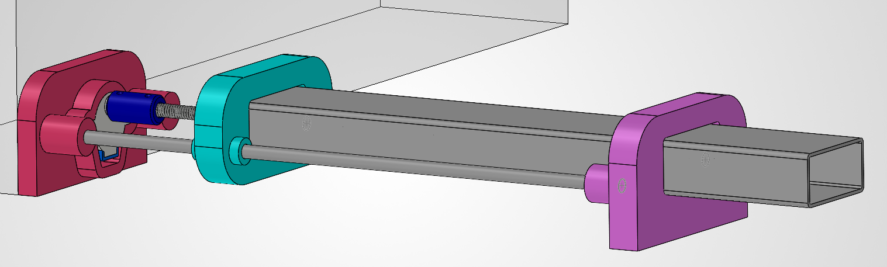
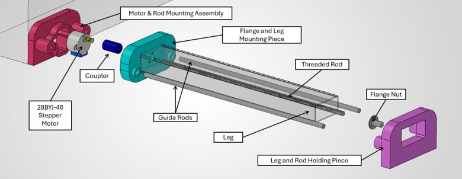

Lunar Pallet Off-Loader (Work in Progress)
Overview
A lunar pallet off-loader designed to carry and deploy cargo and payloads across the surface of the Moon. Our team of five is designing a system that raises a pallet for rover pickup, levels it on the rover deck, and lowers it back down at the drop-off site. This project is still in progress, and this page covers the proof of concept completed so far.
Highlights
- Designed the proof-of-concept leg in SOLIDWORKS as a lead screw driven by a stepper motor, using McMaster-Carr parts.
- Built and tested a working leg at roughly 1/3 scale, with 3D-printed motor mount, carriage, and end plates.
- Chose electric actuation over pneumatic and hydraulic options, in part because of the trade-offs of sealing against lunar regolith.
- Mapped the full off-loading operation into six stages, with system boundaries and monitored and controlled variables for each.
Proof of Concept
The goal of the proof of concept was to show that a single electrically actuated leg could extend and retract reliably. The leg uses a 28BYJ-48 stepper motor controlled by an Arduino Nano, turning a threaded rod that drives a carriage up and down. In testing, the printed plates did not flex, the leg stowed at a manageable length, and the motor held the load. A tilt sensor is the next piece, since the leveling angle will depend on it.
Planned Operation
1. Raise
Disengage the mechanical lock and raise the pallet to maximum height.
2. Pickup
Wait for the rover to drive underneath, then lower and level the pallet onto the rover deck.
3. Load
Secure the pallet on the rover for transport.
4. Traverse
The rover carries the pallet to the drop-off location.
5. Offload
The off-loader lifts the pallet clear of the rover deck.
6. Lower
Lower and level the pallet to the Moon's surface.
Technologies
What's Next
- Integrate a tilt sensor for leveling, along with a computer interface and dashboard for leg position.
- Finalize Revisions 0 and Revision 1, account for lunar hazards in design.
- Scale the single-leg proof of concept toward the full four-leg system, and build full scale! Estimated completion, April 2027.
Gallery

